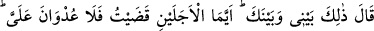
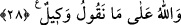

etmelidir. Rivâyet edildiğine göre İbrâhim b. Ethem on yedi yıl odun taşımıştı.
“Sekiz yıl bana ücretle hizmet etmen karşılığında...” ifâdesi, tasavvuf ehlinin yoluna
(tarîk) ve onların mürîdlerini, enbiyânın sünnetlerine uygun olarak terbiye edip
yetiştirdiklerine bir işâret vardır.
Hâfız der ki:
Eymen Vâdisi’nin çobanı yıllarca canla başla Şuayb’a hizmet ettikten sonra
murâdına ulaşmıştır.
28. (Mûsâ) şöyle cevap verdi: Bu seninle benim aramdadır. Bu iki süreden
hangisini doldurursam doldurayım, demek ki bana karşı husûmet yok.
Söylediklerimize Allah vekîldir.
“Mûsâ şöyle cevap verdi: Bu” söylediğin ve benimle anlaşma yapıp bana şart
koştuğun şeyler “seninle benim aramda sâbit ve geçerlidir.” Ben şartımdan
çıkmayacağım gibi, sen de nefsine şart koştuğun hususların dışına çıkmayacaksın.
Ben uzun yahut kısa “bu iki süreden hangisini doldurursam doldurayım,” hizmet
görevimi yerine getirmiş olacağım. “Demek ki bundan dolayı bana bir düşmanlık yok”
yâni bana karşı bir haksızlık olmayacak. Ne on yıldan fazlası ve ne de sekiz yıldan
sonrası için benden hizmet etmem beklenmeyecek, yâni on yılı doldurmak zorunda
kalmayacağım. Hangi süreyi doldurur ve yerine getirirsem artık çoğunu veya azını
yapmamda bana bir günah yoktur. Aramızda anlaştığımız bu şartlara Allah vekildir,
şâhiddir; O gözetler ve korur. Dolayısıyla herhangi birimizin bunun dışına çıkmasına
imkan yoktur.
Nitekim Fethu’r-rahman’da da kaydedildiği gibi Şuayb (a.s.) Medyen halkını topladı
ve Mûsâ (a.s.)’ı kızı Sâfuriyyâ ile evlendirdi. Böylece Mûsâ (a.s.) eve girdi ve on yıl
boyunca Şuayb (a.s.)’ın koyunlarını gütme işini yerine getirdi.
Rivâyet edildiğine göre, anlaşma müddetini tamamlayınca Şuayb (a.s.), Mûsâ (a.s.)’a
dedi ki: “Şu eve gir ve buradaki asâlardan birini al.” Onun yanında peygamberlerin
asâları bulunmaktaydı. Mûsâ (a.s.), Âdem (a.s.)’ın cennetten inerken getirdiği asâyı
aldı. Enbiya, bu asâyı birbirlerine mîras bırakırlardı ve nihâyet Şuayb (a.s.)’a kadar
ulaşmıştı. Mûsâ (a.s.) bu asâ’ya eliyle dokundu, asâ bir şeyle sarılmış idi. Şuayb (a.s.),
Mûsâ’nın bunu almaya ehil olmamasından endişe duyarak buna râzı olmadı ve “başka
birini al” dedi. Ancak asâ yedi kere Mûsâ’nın eline düşüp kaldı. Bunun üzerine Şuayb
(a.s.) Mûsâ’nın farklı bir durumu olduğunu anladı. Koyunları otlatmak için çıkarken ona
dedi ki: “Yol ayrımına gelince, sağdakine sapma. Ot her ne kadar daha fazla ise de